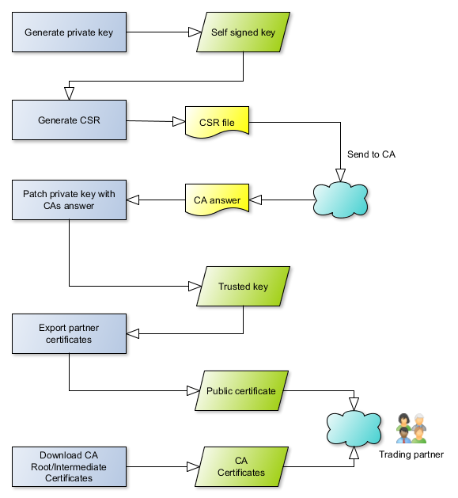

Important: This mendelson software comes with some test keys. NEVER use these keys for production operation!
To transmit data, you need different keys and certificates for transport security, encryption and digital signatures.
In this mendelson product, these keys and certificates are stored internally at a technical level in the underlying database. Although keystore files are always supplied, these are only used for backup purposes.
There are different formats of keys and certificates. Entering partner certificates in your certificate management can therefore be a complex process. This is especially true if the certificates sent by your partner are in formats that are not directly supported by this software.
Please note that you must never pass on your private key to partners. You will also not receive any private keys from your partner. Only certificates are exchanged between the communication partners.
Please protect your private key and create a backup that you keep in a safe place.
You will usually receive certificate files from your partners that are CER or DER encoded. This can usually be seen from the file extensions. You can import these using the import function of the certificate management. They are then available in the system and only need to be assigned to the partner in the partner administration.
Certificates are available in many different formats. If the capabilities of the integrated certificate management are not sufficient to import a certificate from your partner, please speak to your partner and ask them to provide the certificate in a different format - although this should only be the case very rarely. If this is not possible, you should try to convert your partner's certificates using special programs. An important software package in this environment is OpenSSL. It is very powerful, but it is also quite complex to use because the program is command line-based.
You can also use the integrated certificate management to export keys (for backup purposes only) and certificates (for your trading partners).
Please familiarize yourself with the options for importing and exporting keys and certificates in this product. As keys have to be renewed after a certain period of time for security reasons (and therefore also the certificates), it is always necessary to replace certificates. As a rule, each key is replaced once a year. For security reasons, you should not use certificates that are valid for longer than three years.
Once a certificate or key has expired, it can no longer be used. You should apply for a new certificate from your CA before a key expires. You should agree an exact time and date with your partners as to when the new key will be used by you. If there are coordination problems here, some messages may be rejected because they were processed with the wrong keys.
You will also receive new certificates from your partners from time to time (or a hint where you can download the certificates). Please make sure that you always use the currently valid certificates for each partner, otherwise no data exchange can take place!
In the mendelson products, the keys and certificates for different tasks are each managed in a separate certificate manager. There is a TLS certificate manager for the TLS connection and a signature/encryption certificate manager for the keys and certificates of the content encryption and signature. So you will always find two certificate managers.
The certificate managers are a pool of available keys and certificates. Once a key/certificate is in the certificate manager, it is known to the system. Via the client, the certificates can then be assigned to the respective tasks, for example to the partners for encryption, etc. For security reasons, your system's private keys are never forwarded to a connected graphical client. This leads to some inconveniences - for example, you can export private keys only to directories on the server side. This means that even if your private key is displayed in the certificate manager on the client, it is not present there, but remains on the server side.
Before you can work with keys/certificates, you have to import them into the respective certificate management.
The following icons are used in the mendelson certificate manager:
| Partner certificate or certificate of your station. Please send this to your partner. | |
| Own private key. Under no circumstances may you pass this on to a partner. You sign your outgoing messages with your private key and decrypt incoming messages with it. | Root certificate. If you use trusted certificates, that is, certificates issued by a Certification Authority (CA), you will encounter these certificates. |
| Missing certificate If you encounter this icon, a certificate is missing in an assignment or trust chain. |
Note: If an icon is grayed out, it means that the associated key or certificate is not used in the product.
| Certificate Authority: Everything that has to do with the authentication of a certificate. You can also use this to renew expired certificates/keys with the CA. | |
| Create a new - initially self signed key. You can then have this authenticated later by the mendelson CA. | |
| Import certificates and private keys of different formats into the Certificate Manager. | |
| Export certificates for your partners and private keys for your backup | |
| Copy an entry from the TLS certificate manager to the encryption/signing certificate manager or vice versa | |
| Display the location of the mendelson product where a key or certificate is used. This function is only available for the signature/encryption management. You can only delete certificates/keys on the certificate manager if they are no longer used elsewhere in the product. | |
| Delete all entries from the certificate management that have expired | |
| Delete a single entry from the certificate management. This works only if the key/certificate is no longer used in the product | |
| Rename an alias of an entry in the certificate management. This has no functional effect on the product, the entries are identified by their fingerprint and not the alias | |
| Check the revocation lists of the authenticated certificates - whether they are still valid or have been withdrawn by the CA. |
For each certificate, you can view all relevant information in the Certificate Manager - you can get there through the tabs at the bottom of the Certificate Manager. These are:
The transmission path can be encrypted separately (Transport Layer Security - TLS). This is not an encryption/security of the data, but only a security of the transmission path.
To do this, the corresponding certificates for sending messages must be imported into the TLS certificate manager. There can only be one private key in this certificate manager - this is then used as your private TLS key.
As a rule, you need the following prerequisites to establish a TLS connection:
If these requirements are not met, a so-called TLS handshake error will occur. The error messages that occur are not always particularly meaningful. The most common complaint is that the trust path to the root certificate could not be found. You and your partner would then have to check that the following things are really present on both sides:
In your system:
Your partner's system must have the same configuration, but the other way round.
The sender of a message requires a private key for himself and a public key for his partner.
A message is signed with the respective private key, which should therefore only be in the possession of the respective sender. The public key is used to verify a signature. The same mechanism also works for encryption.
The public keys must be exchanged accordingly before the transfer. To give the partner their public key, the “Export certificate” function in the GUI can be used to manage the certificates. To import your partner's public key (embedded in the certificate), you can use the “Import key certificate” function.
Each key or key pair is addressed via an alias that is assigned during import. This alias can then be selected in the partner definitions.
Please note that most keys have a limited validity, which you should check from time to time. The expiration date can be seen in the GUI for key management. If a key has expired, you can no longer work with it, it is invalid.
Messages can only be exchanged in signed and/or encrypted form if both parties involved have the same certificates and keys for each other.
There are different types of keys: selfsigned and trusted. In productive environments
trusted keys are usually used. Trusting a key means that there is an entity
that ensures that the domain under which this server software is running is
actually owned by the respective partners. This instance is the already addressed
Certificate Authority (CA). mendelson e-commerce GmbH has such a CA, you can
trust a key directly at the mendelson CA (http://ca.mendelson-e-c.com/).
To create a private key in the certificate manager please navigate to "Tools
- Create new key (self signed)." The generated can be trusted later (see next
section).
Some data is important when creating the key. You should not choose the validity
for security reasons longer than 365 days. The "Common Name (CN)" is the domain
under which this server software runs. The associated email address must be
located on this domain, so the CA can verify that you actually own this domain.
The CA will send the answer to the trust request (CSR) to the mail address
found in the certificate - that means it is important that you are able to access
this mail address! The other fields describe organization data and
the address of your business.
If you want to use key that is trusted by a CA (Certificate Authority), you
first have to create a private key.
During the key trusting process the CA will mainly send a mail to the mail address
stored in the certificate - please always enter a valid mail address in the
certificate that is on the right domain (CN) and could be accessed by you.
Then build a CSR of it (certificate signing request) and send it to the CA.
The CA will respond with a certificate, use this to patch your private key.
The CA will be never obtain your private key. Please always backup your private
key and do not give it to a third party. mendelson will never aks for your private
key. Most CAs will charge you for getting a trusted key. Please refer to the
CAs web site for the prices.

In this mendelson software, please follow the following steps to get a CA trusted private key:
If you want are using a key that is trusted by a CA (Certificate Authority) it will exceed mainly after 365 days, then it must be renewed. It is possible to renew a certificate at the mendelson CA even if the key has been trusted by an other CA before!
In this mendelson software please perform the following steps to renew your certificate:
Don't worry - This process will not delete your od key pair but create a new one.
You
can export certificates and keys from the product and also import keys that
have been generated by external programs. It's also possible to import
your partners certificates which is required for any secure connection or transmission
to or from one of your partners.
Once
the certificates and keys are available in the certificate Manager they can
be assigned to the safety functions of the partner in the partner management
or be used for the TLS connection.
All
the certificates your partner has sent could be imported using the certificate
import function. The import functionality detects the import format automatically
- you don't have to care for that.
If
a certificate can not be imported via the import mechanism because an error
message occurs please contact the mendelson support. Sometimes
received certificate files of your partners contain more than one certificate
(. p7b ) - in this case you can import multiple certificates from one file.
Private
keys that you would like to import should be present in one of the common keystore formats (JKS or
PKCS#12). When
a key is imported from a keystore please remember that the keystore is protected
by a password (PKCS # 12) or even the keystore is secured with a password and
the included key with another one (JKS) - means you need the keystore password
and (depends on the format) the key password to import keys from a keystore
file.
The "Export" function allows to either export the entry as certificate (for your partner) or (if the entry is a key) as private key (just for you!). If
you want to export the key, then please do so only for backup purposes and never to give any third party! mendelson-e-commerce GmbH will never ask for your private keys!
For any form of secure communication it is necessary to give your partner
the public part of your key. There are different formats - except for the format "SSH2"
(which is only used for SSH based systems like SFTP or SCP) your partner should
be able to import all of them. We would recommend to use the .p7b format for the certificate export. It's because .p7b files (pkcs#7 format) contain the whole trust chain to the CA and your end user certificate in one file.
Keys and certificates have some characteristics, such as key length or signature algorithm, that might make you wonder why you don't just always use the longest key length and strongest signature algorithm for security reasons. However, higher security also has disadvantages, and these are in processing speed. For example, if you choose high key lengths, you will see a slowdown in processing. The processing speed grows non-linearly with the key length. Here, you need to weigh speed against security in each case.
It should also be noted that older TLS versions with TLS 1.2 cannot handle SHA-3 512 or SHA-2 512 signed keys in some implementations. You would have to check with your partners what their TLS versions support before using the respective keys and certificates.
Whenever you deal with certificates or keys you will find files with several
file name extension. In most cases the following extensions are used for the
following certificate related file formats
If you are talking about security with your trading partner it might be helpful to have some knowledge about PKCS ("Public Key Cryptography Standard"). The following list will give you a short overview on the used abbreviations. A detailled list could be obtained at http://en.wikipedia.org/wiki/PKCS
| Name | Comment | |
|---|---|---|
| PKCS#7 | Cryptographic Message Syntax Standard | To sign/encrypt messages |
| PKCS#10 | Certification Request Standard | Format of the message that is send to a CA (certification authority) to request the trusting of a key |
| PKCS#12 | Personal Information Exchange Syntax Standard | Defines the file format of a keystore to store private keys with the assigned certificate |
A certificate revocation list (CRL) is a list that describes the invalidity of certificates. It makes it possible to determine whether a certificate has been revoked or revoked by the respective CA and why. Revocation list queries are therefore only available for authenticated certificates.
Certificates are usually revoked or revoked if their associated keys are no longer secure, for example because they have fallen into the wrong hands. In such cases, the certificate must be revoked before the actual expiration date so that the associated key is no longer used.
The CA manages a revocation list for these cases, which can be queried using the mendelson certificate manager. For this to work, the server process must be able to reach the respective URL of the revocation list for each certificate - this is generally not possible in the DMZ.
Technically, a URL containing information on the revocation list is stored in every trusted certificate via an optional certificate extension. As a rule, this can be accessed via HTTP, FTP or LDAP (RFC 2587). This URL is tracked and the revocation list is analysed.
mendelson CA, request a trusted certificate: http://ca.mendelson-e-c.com
Public key certificate: http://en.wikipedia.org/wiki/Public_key_certificate
CA: http://en.wikipedia.org/wiki/Certificate_authority
Self signed certificates (engl.): http://en.wikipedia.org/wiki/Self-signed_certificate
Public-key cryptography: http://en.wikipedia.org/wiki/Public_key
Symmetric-key algorithm: http://en.wikipedia.org/wiki/Symmetric_cryptography
| Last modified: $Date: 11/03/25 9:18 $ |